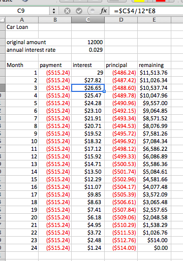
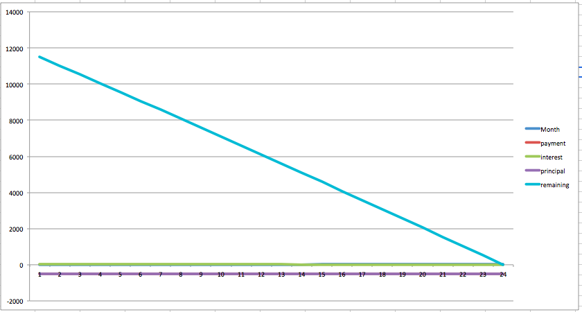
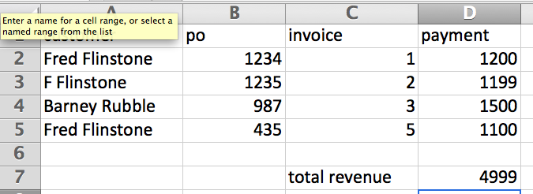
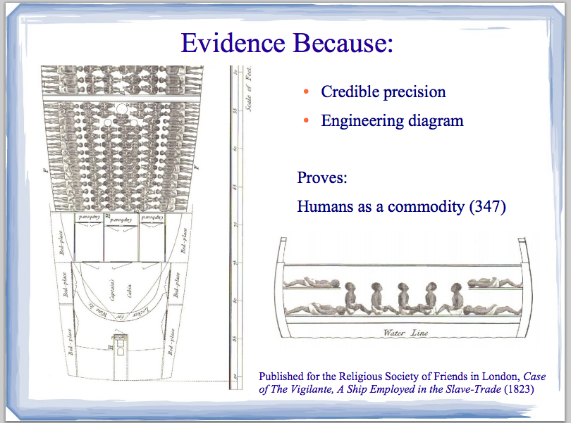

Your browser doesn't support the features required by impress.js, so you are presented with a simplified version of this presentation.
For the best experience please use the latest Chrome, Safari or Firefox browser.

Thinking in Excel
Rich Hildred - rhildred@wlu.ca - 519-594-0900

our brains are connection machines

excel shows us data in a way that we can make inferences from it

we can also chart the data in a way that makes the conclusions obvious

spreadsheets aren't good for all datasets though.

Beautiful Evidence by Edward Tufte
I'll let him have the last word